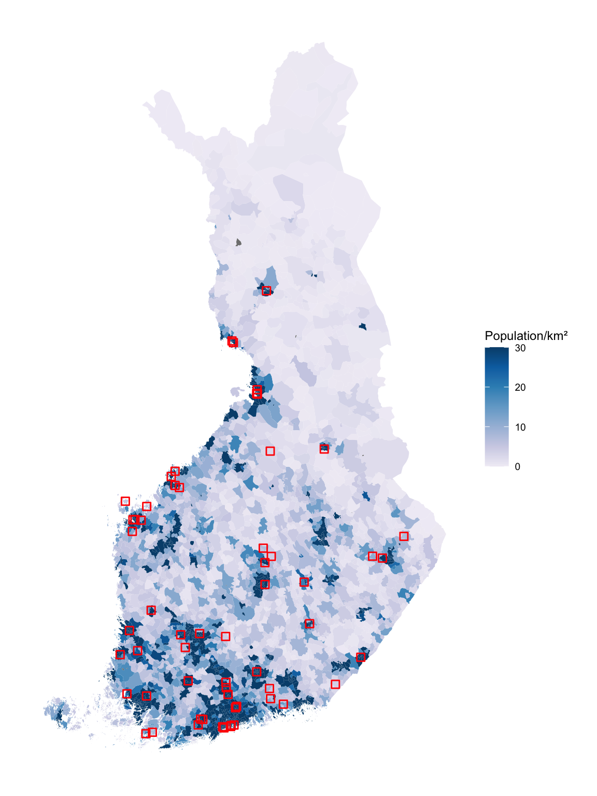
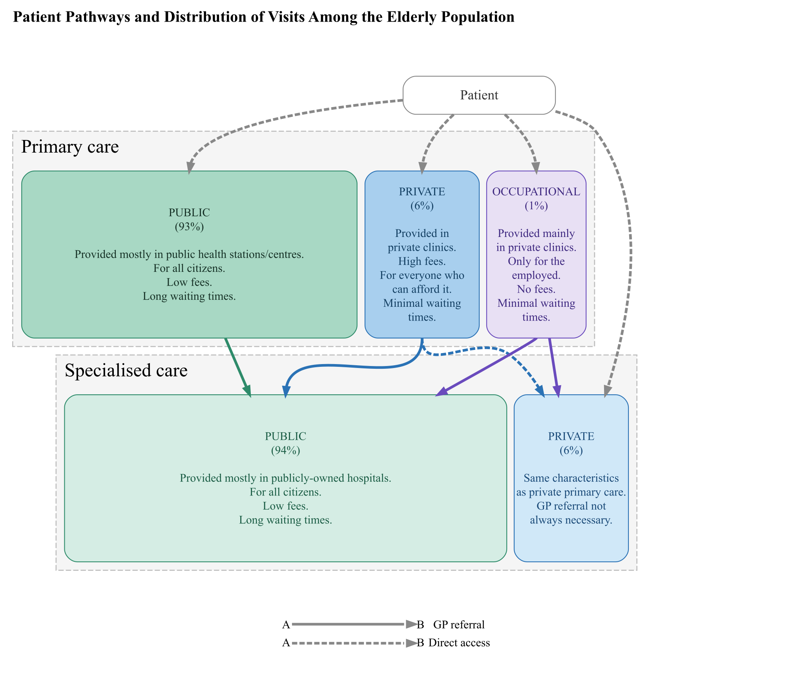

# Load 'here' package for relative file paths
library(here)
# Run setup script
source(here::here("scripts", "setup.R"), echo = FALSE)The Effects of Primary Care Clinic Closures: How Older People’s Geographical Distance to Care Affects Their Health and Service Use?
The effects of primary care clinic closures: How older people’s geographical distance to care affects their health and service use?
Setup
Identifying closed stations
Running data to identify health station closures and new station entries. The data is collected from public sources using Internet Archive WayBack Machine (DOI will be added).
# Run script
source(here::here("scripts", "identifying_closed_stations.R"), echo = FALSE)
DT::datatable(exits_short)Maps
This section runs the codes that draw maps of health stations in Finland. The three maps include stations that i) closed ii) opened and iii) all stations are saved as pdf/png files to output-folder. An interactive map is then printed for the Quatro document.
Drawing a map of closed clinics with population density:
Closed health stations are marked with red squares. Population density is calculated by dividing the population of the postal code area by the area of the postal code region (km2). To improve map readability, population density values are truncated at 100 people per square kilometre—all areas exceeding this threshold are capped at 100, regardless of their actual density.
# Running script to draw the maps
source(here::here("scripts", "map_closures.R"), echo = FALSE)
exits_graph
Drawing map of stations closed and opened during the study period relative to other stations that did not close:
All closed stations are marked with yellow squares, new clinics marked with purple squares, and others that remain (mostly) in the same location are marked with green squares.
# Running script to draw the maps
source(here::here("scripts", "map_all_stations.R"), echo = FALSE)The pfd/png images of the maps are saved in output-folder.
Drawing interactive map for the GitHub documentation: KESKEN
Municipality level descriptive statistics
Descriptive statistics at municipality level. Treatment (>1 closure in municipality) and control (no closures) group mean, standard deviation, and relative difference.
Source: THL (https://sotkanet.fi/sotkanet/fi/index)
# Running script to make table
source(here::here("scripts", "mun_level_summary_table.R"), echo = FALSE)
==================================================================================================
variable.ena mean.treat sd.treat mean.control sd.control relative.diff smd
--------------------------------------------------------------------------------------------------
Health stations (N) 5.073 [4.508] 1.518 [1.248] +234.2 +1.087
Population (ppl) 61942.510 [106074.660] 10904.970 [20778.730] +468.0 +0.676
Population density (ppl/km2 184.366 [478.606] 40.410 [151.839] +356.2 +0.410
Morbidity index 116.127 [18.562] 126.626 [26.174] -8.3 -0.465
Aged > 64 (%) 19.888 [4.054] 24.314 [5.568] -18.2 -0.914
Tax revenue (€/capita) 3595.732 [476.429] 3185.438 [531.652] +12.9 +0.818
Demographic dependency ratio 59.354 [7.858] 67.849 [7.907] -12.5 -1.085
Unemployment rate (%) 10.829 [3.742] 10.809 [3.848] +0.2 +0.005
At-risk-of-poverty rate (%) 12.807 [3.701] 14.443 [4.041] -11.3 -0.425
Net migration -0.880 [5.223] -4.446 [8.219] -80.2 +0.520
Municipalities 41 267
--------------------------------------------------------------------------------------------------Finnish healthcare system chart: patient pathways
The system chart visualizing the patient pathways, structure and distribution of visits among the elderly population. Primary care is provided independently by nurses, GPs, and specialists. Specialised care is typically provided by specialists assisted by nurses. Shares of the service use of different subsystems among people aged over 64 years are from THL Sampo -datacubes (Sampo).
